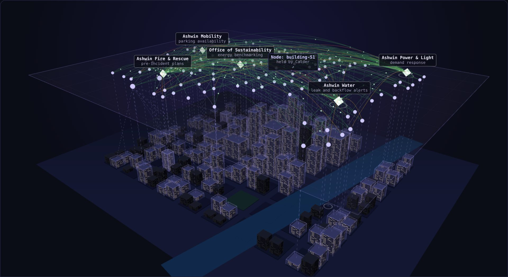

What CNS/CP does
CNS/CP decides whether two systems may connect, and on what terms.
Protocols standardize what systems can say to each other. Almost nothing standardizes whether two systems should be connected at all. CNS/CP is an open standard for that step.
The gap
Before two systems that have never been integrated can exchange anything, whether data, a tool call or a control action, someone has to establish that what one offers matches what the other needs, and connect them on terms both accept. Today that is done by hand, once for each pair. The terms it settles are written down nowhere anyone can inspect, audit or revoke.
The cost is not that this work gets thrown away. It is that it never changes. Written once for a pair of systems, an integration keeps giving the answer it was given on the day it was written.
The problem is growing. Mesh architectures multiply the relationships each system has to hold, and AI agents now start cross-boundary interactions on their own, at machine speed. Under CNS/CP, an agent's reach is no wider than what it has declared.
Where it sits
CNS/CP is a connection layer between the application protocols systems already speak and the identity systems they already use. It relies on identity without checking credentials, and carries application traffic without reading it. §3.1
Four ideas
The specification defines a small vocabulary and uses each word in one sense only. These four carry most of it.
Node
How a system takes part. A Node enrolls with an identity, asserts the Contexts it has standing at, and declares what it can do. Nothing about what runs behind it is visible.
Context
A name for something in the real or logical world: a room, a feeder, a vehicle, a service. It belongs to no Node. Two systems connect about a Context, not about each other's addresses.
Connection Profile
A named, versioned contract, such as cp:example.occupancy. It has two roles, Provider and Consumer, and says exactly what may cross between them. Profiles are published once, in one Registry.
Realm and Governor
A Realm is the bounded region where Connections are formed: a building, a fleet, a hospital. Its Governor holds the Realm's published rules, decides who is admitted, and forms every Connection.
How a Connection forms
Six steps in two phases. In Admission, a Node submits and the Governor decides, three times. In Operation, the Governor acts on what it already holds. Nobody submits anything, and the phase never ends. §8
Admission · the Node submits
The Node presents an identity. The Governor admits it or rejects it.
The Node asserts a Context. The Governor authorizes it, possibly for a stated term, or rejects it.
The Node declares a Capability: a Profile, a role in it, and one authorized Context. The declaration stands until something matches it.
Operation · the Governor acts, continuously
Whenever anything changes, the Governor brings the Realm's Connections back in line with what it holds.
Same Profile, complementary roles, matching Contexts, a version both support. Every pair that fits is matched.
The Governor forms the Connection and attaches both Nodes. From here data flows, and all of it passes through the Realm.
Matching is complete: the Governor does not choose among matching pairs, and which Connections a system goes on to use is the system's own choice. Given the same declarations, the same published rules and the same Profile versions, any conforming Governor forms the same Connections.
Step through it, and try it with two NodesThe life of a Connection
A Connection keeps the Profile version it was bound at for life. Its status is the state at Bind or the latest report the Governor accepted, not a measure of health. An authorization can be revoked, or lapse at the end of a stated term, and the Realm stops conveying on that Connection at once.
What each system does with what arrives is its own runtime's decision, not the Connection's. CNS/CP governs whether two systems are connected and what may cross. It does not decide whether an action, once delivered, goes ahead. §6.4
Realms at every scale
A Realm can be one building, a bank's branch network, or a city. Realms do not merge. They compose: a system admitted to two Realms takes part in each through its own Node, and each Realm runs its own six steps. A containing Realm sees a Node, not the Realm behind it, and no Connection crosses a Realm boundary. §10.3
Three worked examples, all invented, show this from each side.

What CNS/CP is not
The specification says what must be true, not how it is achieved, and it is precise about what it leaves to others. §2.2
- Not an application protocol. A Connection carries what its Profile declares. CNS/CP does not read or interpret it.
- Not an identity system. A Realm names the identity it trusts and acts on the outcome. It never checks credentials itself.
- Not orchestration or workflow. Which Connections a system uses, in what order and to what end, sits above this layer.
- Not monitoring. A status is a report a Node made. Heartbeats and inspection are left to implementations.
Open, and on a standards track
One specification and one Profile namespace keep every implementation meaning the same thing by the same name.
OSTERA
The specification has been contributed to OSTERA, where a Working Group is taking it forward as an open standard.
CNS/CP is being applied by the Interoperable Building Box and the Coalition for Smarter Buildings.
Go deeper
The specification is the reference. The explainers show the same ideas working, one step at a time.